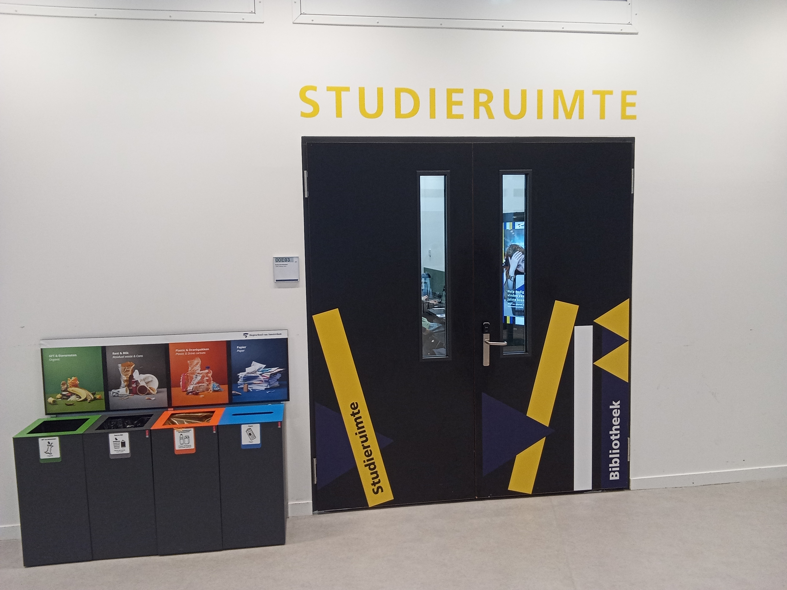
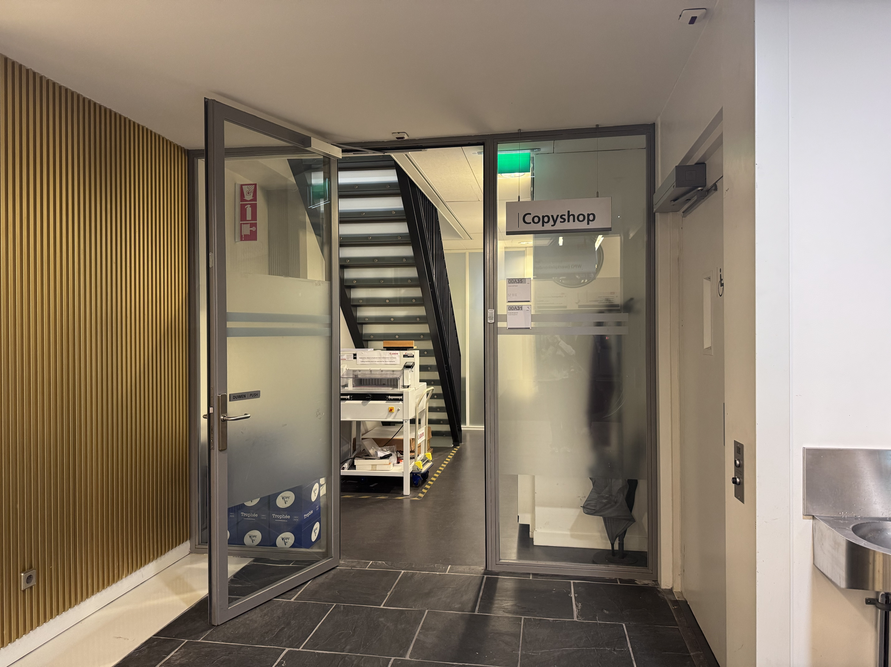

Campus
Studieruimte

Locatie: Theo Thijssenhuis beganegrond – Studieruimte
Het Theo Thijssenhuis (TTH) biedt verschillende plekken waar studenten rustig kunnen werken. Direct naast de kantine vind je een open zitruimte met tafels die veel studenten gebruiken als informele studieplek. Daarnaast zijn er verspreid door het gebouw meerdere rustige hoekjes en tafels waar je kunt lezen, samenwerken of zelfstandig studeren. Het TTH heeft geen officiële stilteruimte, maar de aanwezige werkplekken zijn ideaal voor korte studiesessies of groepsopdrachten.
De Copyshop

Locatie: Kohnstammhuis 00A35 - Copyshop
De Copyshop van de Hogeschool van Amsterdam vind je in het Kohnstammhuis (Wibautstraat 2–4), ruimte 00A35.
Studenten en medewerkers kunnen hier terecht voor printen, kopiëren, scannen, plotten en drukwerk, maar ook voor inbinden, lamineren, snijden en andere nabewerkingen.
Kleine opdrachten zijn vaak binnen 4 uur klaar, grotere opdrachten binnen één tot twee werkdagen.
De Copyshop is geopend van 08:30–12:30 en 13:00–16:30.